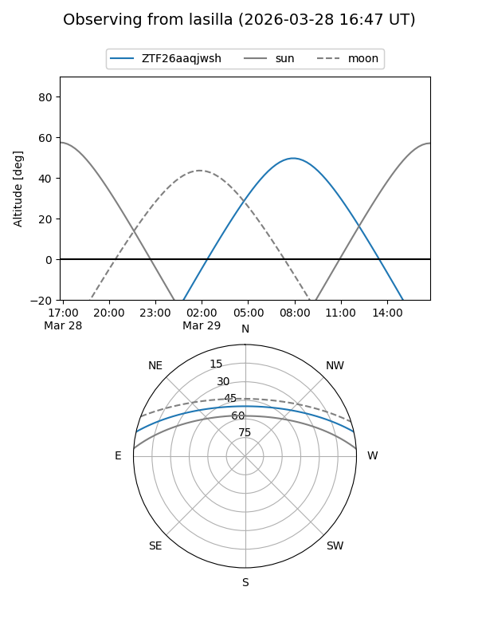
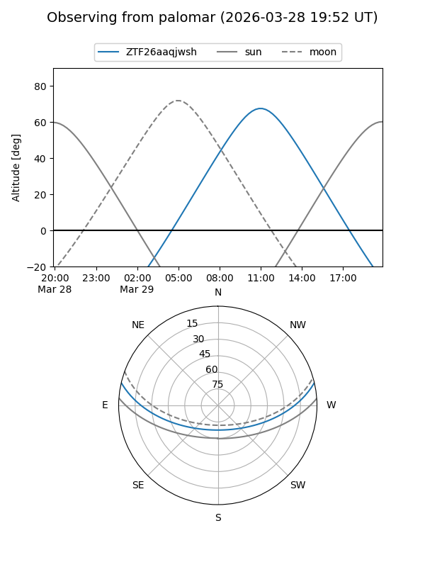

ZTF26aaqjwsh
Target ZTF26aaqjwsh at 2026-03-29 13:14
Aliases and brokers:
FINK: link
Lasair: link
ALeRCE: link
alt names
ZTF26aaqjwsh (ztf,fink_ztf)
Coordinates:
equatorial (ra, dec) = 234.5247,+11.07190
equatorial (HMS+DMS) = 15:38:05.92,+11:04:18.85
galactic (l, b) = (18.8722,+47.73576)
Flags:
Photometry:
last ztfg=17.26
1 ztfg detections
Lightcurve
Visibility


Additional plots